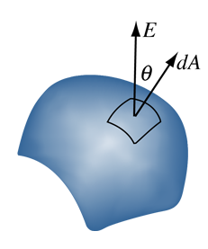

7 Gauss’s Law
Recommended reading: Griffiths Section 2.2
##Pre-lecture problem
7.1 Introduction
Gauss’s Law is the first of Maxwell’s equations and forms part of the basis of classical electromagnetism. It concerns the relationship between electric flux through a closed surface and the electric charge enclosed within that surface. Crucially, it allows us a much simpler method by which to calculate the electric field compared to
7.2 Electric flux
In order to discuss Gauss’s Law, we will now revisit the topic of electrostatics, in particular electric fields. Consider again the electric field of a point charge \(q\) at the origin. Imagine we surround the charge by a spherical surface, centred on the origin with radius \(R\). The area of the surface is \(A = 4\pi R^2\) , and the magnitude of electric field a distance \(R\) from the charge is
\[ E(R) = \frac{q}{4\pi \epsilon_0 R^2} \],
with its direction perpendicular to the surface of the sphere.
We now introduce a new concept, known as the electric flux, which is the flux of the electric field through a surface. It counts how many field lines pierce the surface. In the case of the point charge, the flux \(\Phi_E\) is given by the magnitude of the electric field multiplied by the area of the surface, hence \(\Phi_E = EA\). In the case where we have a point charge enclosed within the surface:
\[ \Phi_E = EA = \frac{q}{4\pi\epsilon_0 R^2} 4\pi R^2 = \frac{q}{\epsilon_0} \]
Notice how \(EA\) does not depend on the radius \(R\)! To understand this, first let’s generalise this concept beyond a spherical surface. Let’s say we deform the spherical surface into any other closed surface (i.e., not tearing holes in it). Once a field line goes through the surface, it counts towards the flux. No matter how big or small we make the surface, and no matter its shape, the number of field lines coming out of the surface will be the same provided that amount of charge inside stays the same. If we add more charge inside, there will be a higher density of field lines, hence more field lines will pierce the surface. This means that the electric flux through a surface is a measure of the amount of charge inside that surface, hence \(\Phi_E = \frac{q}{\epsilon_0}\). As we can see, it is actually proportional to the amount of charge, modified by a constant factor of \(\frac{1}{\epsilon_0}\). We can make sense of this conceptually by reminding ourselves that \(\epsilon_0\) defines the capacity of free space to hold electric fields, so it is sensible that it should have a bearing on electric flux.
{#surface-vector}
In the case of a point charge and a spherical surface, the electric field lines are always perpendicular to the surface. What happens when the electric field is not perpendicular to the surface? Then we can consider the projection of the surface perpendicular to \(E\). If the angle between the field direction and the normal to the surface is θ, as represented in (surface-vector?), then the flux of a constant electric field of magnitude (i.e., field line density) \(E\) is \(\Phi_E = EA \cos\theta\). If we have a volume V enclosed by a surface S, we can “tile” S with infinitesimal tiles dA, where the area is infinitesimally small, and the direction is out of the volume. The total flux is then the sum over all the infinitesimal fluxes through dA. This is a surface integral, written by ΦE = I S E · dA , (23) where the symbol H S denotes integration over the entire surface S. Since field lines cannot cross each other, if we have a bunch of charges inside the volume V, the flux of the charges adds up. Positive charges create field lines going out of the volume, and negative charges create field lines going into the volume. Moreover, every field line sprouting at a positive charge which does not exit V must terminate on a negative charge inside V, cancelling that part of the flux for both charges. Then, from Equation (20), we find that the flux through S is equal to the total charge Qinside inside S, divided by 0: I S E · dA = Qinside 0 . (24) This is called Gauss’ law. In the next lecture we will see how this law can be used to calculate the electric field for some interesting charge distributions.
Gauss’ law in mathematical form looks pretty terrifying: I S E · dA = Qinside 0 . (25) The power of this expression lies in the fact that it is universally valid. So we would like to take this law as our starting point in solving electrostatic problems. The way we use this equation is by carefully unpacking the dot product in the integral, and choosing a surface that we can easily integrate over, preferably without actually having to solve the integral. First, let’s see how we can calculate the electric field of a point charge by starting from Gauss’ law, just to illustrate its use. We have the dot product E · dA, which we may get rid Electricity 9 of by choosing a surface2 that either turns it into E · dA = EdA or E · dA = 0. So we want to find a surface S that is either parallel or perpendicular to the field, such that cos θ = 1 or cos θ = 0. The surface S may have different facets that are parallel and perpendicular to the field. Next, we should consider the symmetry of the problem. The point charge has spherical symmetry around the charge, so the electric field must point radially outwards (or inwards). We’re not using knowledge of Equation (6) here, we deduce that any other direction of the electric field would violate the symmetry of the problem. Knowing the direction of the field allows us to choose S parallel to this, and that determines the spherical surface of radius r. Any r will do. The second observation from symmetry is that the magnitude of E must be constant on S. Therefore, we find that for the integral we have I S E · dA = I S E dA = E I S dA , (26) where we pulled E out of the integral, since it is constant over the entire surface S. Now we are left with only the surface integral H S dA. But this is simply the surface area of a sphere of radius r. Gauss’ law then becomes I S E · dA = 4πr2E = q 0 . (27) Rearranging gives the magnitude: E = q 4πr2 0 , (28) and including the field direction we find the required Equation (6). In summary, solving Gauss’ law to find the electric field for a charge distribution relies on symmetry arguments to find the direction of the field, which in turn leads to the most convenient Gaussian surface S. Then you evaluate the dot product E · dA, and solve the integral. Gauss’ law is one of the four Maxwell equations (in integral form) that completely describes how electric and magnetic fields behave, even in situations where there are no symmetries and the integral is really hard to evaluate.